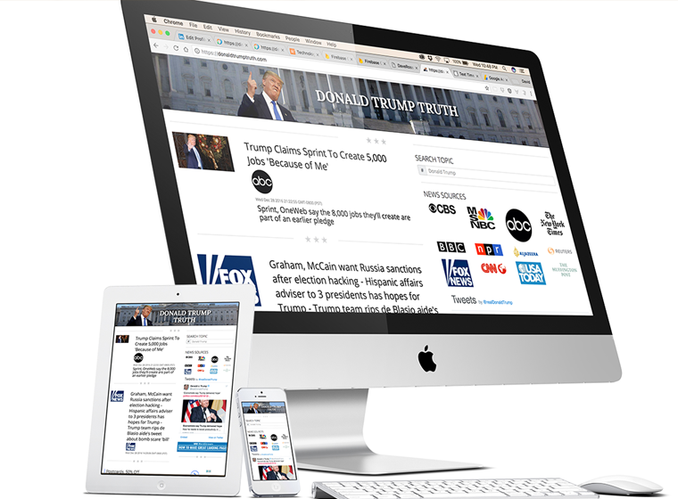

		<!-- START PROJECT -->
		<section id="project-page">
			<div class="container">
				<div class="row">
					<div class="col-md-12">
						<div class="flexslider">
						 	<ul class="slides">
						    	<li></li>
							    
						  	</ul>
						</div><!-- END FLEXSLIDER -->
					</div><!-- END COLUMN 12 -->
					<div class="col-md-12 project-info">
						<h3 class="project-title">Donald Trump Truth</h3><br />
                        <h4 class="project-subtitle">Click Bait Site</h4>
						<p> Here is a series of web sites populated with RRS feeds from varies news sources. Each article is posted to social media with the link returning the user to the site through an interstitial advertisement. The hole process is automated and dynamic.</p>
                        <ul class="project-details">
							<li><span>Categories</span> web design - ui design - ux design</li>
                            <li><span>Company</span> Ancient Goose Network</li>
						</ul>
						<a href="https://donaldtrumptruth.com/" class="button-border-white">View Online</a>
					</div><!-- END COLUMN 12 -->		
				</div><!-- END ROW -->
			</div><!-- END CONTAINER -->
		</section>
		<!-- END PROJECT PAGE SECTION -->
